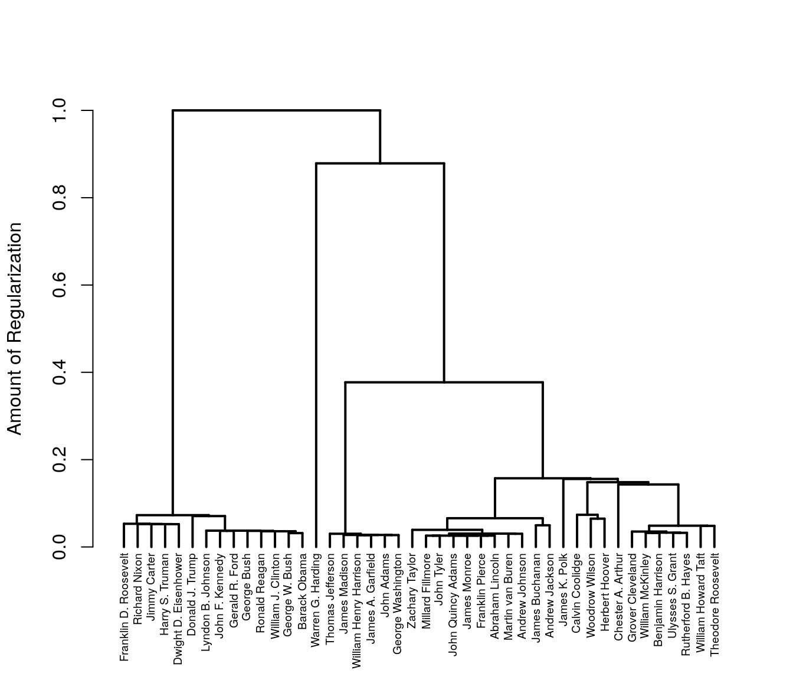
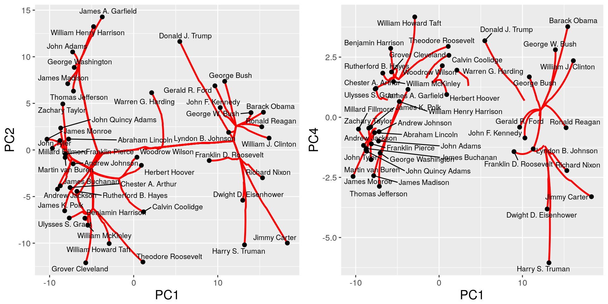

Clustering is important.
Convex clustering and biclustering offer an alternative to traditional clustering algorthims. Let \({\boldsymbol{X}} \equiv \left[{\boldsymbol{x}}_1,\dots, {\boldsymbol{x}}_n \right] \in \mathbb{R}^{p\times n}\) denote our data matrix consisting of \(n\) observations in \(p\) dimensions. We seek an estimate \({\boldsymbol{U}} \equiv \left[{\boldsymbol{u}}_1,\dots, {\boldsymbol{u}}_n \right] \in \mathbb{R}^{p\times n}\) which solves the following optimization problem: \[ \underset{{\boldsymbol{U}}}{\textrm{minimize}} \;\; \frac{1}{2} \| {\boldsymbol{X}} - {\boldsymbol{U}} \|_F^2 + \lambda \sum_{ l < m} w_{l,m} \| {\boldsymbol{u}}_l - {\boldsymbol{u}}_m \|_2 \]
where \(\lambda > 0\) is a regularization parameter, and \(w_{l,m} > 0\) denote pairwise weights.
Convex clustering has many advanatges.
However, it can be slow.
In this vignette we introduce the clustRviz package which delivers fast approixmations to the convex clustering solution path as well as easy visualizations, both static and interactive.
In what follows we will give a quick introduction to the package and its capabilities; a more detailed treatment can be found in the Details vignette.
Throughout both vignettes we will utilize the presidential speech dataset included in the clustRviz package.
library(clustRviz)
data("presidential_speech")The presidential speech data set contains the top 75 most variable log-transformed word counts of each US president, aggregated over several speeches. Additional text processing such as removing stop words and stemming have been done via the tm package.
We quickly examine the speech data:
Xdat <- presidential_speech
dim(Xdat)
#> [1] 44 75
Xdat[1:5,1:5]
#> amount appropri british cent commerci
#> Abraham Lincoln 3.433987 2.397895 1.791759 2.564949 2.708050
#> Andrew Jackson 4.248495 4.663439 2.995732 1.945910 3.828641
#> Andrew Johnson 4.025352 3.091042 2.833213 3.332205 2.772589
#> Barack Obama 1.386294 0.000000 0.000000 1.386294 0.000000
#> Benjamin Harrison 4.060443 4.174387 2.302585 4.304065 3.663562Here we see the columns correspond to stemmed words and rows correspond to presidents.
We begin by clustering. As discussed in Details, many user-specified options can be passed to CARP, including weights, algorithm type, and various pre-processing options. These can be seen via
By default, however, CARP makes reasonable default choices and be run out of the box.
We begin by fitting the CARP solution path to the presidents data.
carp.fit <- CARP(Xdat)
#> Pre-computing weight-based edge sets
#> Computing CARP Path
#> Post-processingWe can examine our CARP fit via
print(carp.fit)
#> CARP Fit Summary
#> Number of Observations: 44
#> Number of Variables: 75
#> Pre-processing: center
#> Weights: RBF Kernel, phi = 0.001, k = 4
#> Algorithm: CARP-VIZ
#> Visualizations: Static DendStatic PathInteractive Dend/Path
#> Raw Data:
#> amount appropri british cent commerci
#> Abraham Lincoln 3.433987 2.397895 1.791759 2.564949 2.708050
#> Andrew Jackson 4.248495 4.663439 2.995732 1.945910 3.828641
#> Andrew Johnson 4.025352 3.091042 2.833213 3.332205 2.772589
#> Barack Obama 1.386294 0.000000 0.000000 1.386294 0.000000
#> Benjamin Harrison 4.060443 4.174387 2.302585 4.304065 3.663562this displays things like the algorithm used, weight calculations, pre-processing, as well as a brief data description.
Once fitted, a natural first step is to obtain clustering solutions. This is done via Clustering function. similar to cutree, Clustering can take the arguement k specifying the number of clusters desired.
carp.cluster.ksol <- Clustering(carp.fit,k=5)We can examine the cluster assignments
head(carp.cluster.ksol$clustering.assignment)
#> [1] "cl1" "cl1" "cl1" "cl2" "cl3" "cl3"and the cluster means
head(carp.cluster.ksol$cluster.means)
#> cl1 cl2 cl3 cl4 cl5
#> [1,] 3.696392 1.8627224 4.038285 1.381924 0.0000000
#> [2,] 3.395965 2.0425014 4.075400 1.641153 0.6931472
#> [3,] 2.928241 0.5157932 2.300496 1.592841 0.0000000
#> [4,] 1.531153 0.7925161 3.551143 0.000000 2.1972246
#> [5,] 2.967835 0.9780746 3.356572 1.181679 2.3025851
#> [6,] 2.467062 0.1980421 3.096177 1.186066 0.0000000Besides specifying the number of clusters, CARP can also return clustering assignment based on the amount of regularization. Using the percent arguement we can specify the percent of regularization along the path at which to examine.
carp.cluster.regsol <- Clustering(carp.fit,percent=.3)Cluster assignments and cluster means are returned as before
head(carp.cluster.regsol$clustering.assignment)
#> [1] "cl1" "cl1" "cl1" "cl2" "cl1" "cl1"
head(carp.cluster.regsol$cluster.means)
#> cl1 cl2 cl3 cl4
#> [1,] 3.874771 1.8627224 1.381924 0.0000000
#> [2,] 3.750453 2.0425014 1.641153 0.6931472
#> [3,] 2.600722 0.5157932 1.592841 0.0000000
#> [4,] 2.585061 0.7925161 0.000000 2.1972246
#> [5,] 3.170654 0.9780746 1.181679 2.3025851
#> [6,] 2.795296 0.1980421 1.186066 0.0000000Along with fast computation, clustRviz also provides a variety of clustering and biclustring visualizations, both static and dynmaic. In the case of clustering, one of the basic visualizations we may obtain from our CARP solution path is the dendrogram. While a dendrogram representation is not guarenteed for Convex Clustering generally, CARP’s default algorithm (appropriately titled CARP-VIZ), algorithmically ensures that such a representation exists. In order visualize the dendrogram associated with the CARP solution path we simply plot the object:
plot(carp.fit)
The dendrogram is the default visualization when calling the plot function on a CARP object. Additional visualizations may be displayed by specifying the type arguement. In particular the the clustering path visualization, a clustering visualization unique to fusion clustering algorithms, may be obtained by specifying type=path:
plot(carp.fit,type='path')
plot(carp.fit,type='path',percent=.05,axis = c('PC1','PC4'))
The clustering path above shows our original data points (black) projected onto the first two principal components. As the amount of regularization increases observations begin to fuse together forming clusters. The red curves indicate the paths the observations take as they fuse together.
By default the entire the CARP path is plotted. We can examine portions of the path by specifying the percent of regularization via the percent arguement; other axis can also be specified.
Finally an interactive visualization of both CARP solutions paths and their associated dendrograms can displayed via the type='interactive' option. In this case plot lauches a shiny application which allows users to watch their data form clusters. The app consists of both Movie and Static tabs. In the Movie tab we can watch clusters form in real time as the CARP iterations (and hence regularization) increases. In the Static tab users can choose discrete numbers of clusters and view the path and dendrogram to which it corresponds. An example of the interactive CARP plot is given below.